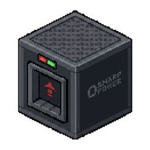

Сетка станций в Верхнем мире; точка отклоняется от центра ячейки на ±120 блоков.
ZITRAKSMODE · АРХИВ 024 ⚡ 01 / 04
МАЛЕНЬКАЯ МАШИНА. БОЛЬШАЯ СКОРОСТЬ.
ЭЛЕКТРО
САМОКАТ.
Пять мест. Миллион единиц заряда. На ровной дороге — 80, на спуске — только ты, масса и гравитация. Испытай оригинальную модель и найди станцию в мире.
80КМ/Ч · РОВНАЯ
15KБЛОКОВ · ЗАПАС
05МЕСТ · ВКЛ. ВОДИТЕЛЯ
ZM — 24 / SCOOTER● MODEL / LIVE
01 / ПЕРЕТАЩИ ДЛЯ ВРАЩЕНИЯ
SCROLL TO ENTER THE CIRCUIT↓ENGINEERED TO GO FURTHER
01 ИСПЫТАТЕЛЬНЫЙ ТРЕК
ПРОВЕРЬ
ГРАВИТАЦИЮ.
Интерактивная лаборатория по формулам ScooterEntity.java. Это демонстрация поведения мода, не сам Minecraft: выбери рельеф, добавь пассажиров и держи газ.
● LIVE SIMULATION / 20 TPS01 / РОВНАЯ
SPEED / HUD000КМ/Ч

СНАЧАЛА ПОЛУЧИ САМОКАТ ↓W / ↑ ГАЗ S / ↓ ТОРМОЗ
БАТАРЕЯ100%
ПРОЙДЕНО0 мПРОЕЗЖЕННЫЙ ПУТЬ
МАССА СОСТАВА2.0УСЛОВНЫЕ ЕДИНИЦЫ
01 / РЕЛЬЕФЛИНИЯ ДВИЖЕНИЯ
На ровной дороге предел — 80 на HUD. Для рекорда в 100 понадобится спуск.
02 / ЭКИПАЖДО 5 МЕСТ
01ВОДИТЕЛЬ · ИГРОК1.0
Массы из ScooterMassHelper.java. Числа в поле можно менять для эксперимента — это не изменения мода и не килограммы.
LAB NOTE / 001
В гору тяжёлый экипаж теряет разгон. Под уклон масса работает на тебя. Выбери четырёх железных големов — и сравни.
↘02 ВСТРЕЧА В МИРЕ
ТОЧКА
ЗАРЯДА.
Станция из scooter_station.nbt, вплоть до направления каждой ступени. Поверни её, рассмотри настоящие надписи на табличках и подойди к подвесному фонарю.
● SCOOTER_STATION.NBT / 3D10 × 6 × 11 BLOCKS
3D недоступно в этом браузере. Ниже можно выбрать порт кнопками.
СТАНЦИЯ · 198 БЛОКОВ / 3 ПОРТА / 2 ТАБЛИЧКИ / 1 ФОНАРЬ
◉ ТЕРМИНАЛ / ПОРТ 01 ИЗ 03

ЭНЕРГИЯ
ПО МАРШРУТУ.
Три порта в настоящем шаблоне: [2,1,3], [2,1,5], [2,1,7]. Текстуры корпуса и передней панели — из мода.
АККУМУЛЯТОР +1% / СЕК
Сначала получи самокат в разделе «Испытательный трек».
100%
Три порта, каменная крыша, стены и светильник — все блоки взяты из исходной структуры.
Шанс встретить один или несколько самокатов: 15% — один, 6% — два, 2% — три.
03 ИНЖЕНЕРНЫЕ ДАННЫЕ
ВНУТРИ
МАШИНЫ.
Цифры и поведение — из Java-кода оригинального мода, а не из фантазии. Вся визуализация использует его геометрию, атлас и ресурсы.
Единиц заряда. Номинального запаса хватает на 15 000 блоков; расход зависит от пройденного пути.
Так внутренняя скорость переводится в показания HUD. На спуске снимается ограничение ровной дороги.
Водитель и до четырёх пассажиров. Их масса влияет на ускорение, подъём, спуск и управление.
04 ДРЕВО ДОСТИЖЕНИЙ
ОСТАВЬ
СЛЕД.
Ветка здесь, внизу, связана с общим деревом. Получи самокат, положи зарядный порт в инвентарь и пересечь отметку 100 на HUD.
0 / 3
Дальше —
твой маршрут.